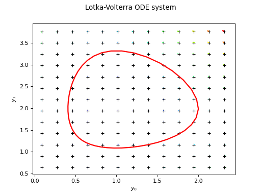

Fehlberg¶
(Source code, png)

- class Fehlberg(*args)¶
Adaptive order Fehlberg method.
- Parameters:
- transitionFunction
Function The function defining the flow of the ordinary differential equation. Must have one parameter.
- localPrecisionfloat
The expected absolute error on one step.
- orderint,
![order\in\{0,1,2,3,4\}]()
The order of the method, ie the exponent
 in the estimate of the
local error for a step of size
in the estimate of the
local error for a step of size  written as
written as  .
.
- transitionFunction
See also
Notes
The Fehlberg method of order
 is a one-step explicit method
made of two embedded Runge Kutta methods of order and
is a one-step explicit method
made of two embedded Runge Kutta methods of order and  .
More precisely, such a method approximate the solution of:
.
More precisely, such a method approximate the solution of:![\vect{y}'(t)=f\left(t,\vect{y}(t)\right)\quad\mbox{with}\quad \vect{y}(t_0)=\vect{y}_0]()
at a given set of locations
 by first building an
approximation over an adapted grid
by first building an
approximation over an adapted grid  with a
number of points
with a
number of points  not necessarily equal to the number of locations
not necessarily equal to the number of locations
 and internal nodes not necessarily part of the set of locations. Then,
the solution
and internal nodes not necessarily part of the set of locations. Then,
the solution  is approximated by a smooth piecewise polynomial
function using
is approximated by a smooth piecewise polynomial
function using PiecewiseHermiteEvaluation, which is evaluated over the set of locations.The method proceeds as follows. Knowing the solution at location
 and a current time step
and a current time step  , two
approximations
, two
approximations  and
and  of
of
![\vect{y}_{i+1}=\vect{y}(\tau_i+h_i)=\vect{y}(\tau_{i+1})]() are built, such
that:
are built, such
that:![\hat{\vect{y}}_{i+1}=\vect{y}_i+h_i\vect{\Phi}_{\mathrm{I}}\left(\tau_i, \vect{y}_i, h_i\right) \\
\bar{\vect{y}}_{i+1}=\vect{y}_i+h_i\vect{\Phi}_{\mathrm{II}}\left(\tau_i, \vect{y}_i, h_i\right)]()
where we assume that:
![\left|\vect{\Phi}_{\mathrm{I}}\left(\tau_i,\vect{y}_i,h_i\right)-(\vect{y}_{i+1}-\vect{y}_i)/h_i\right|=\cO\left(h_i^p\right)\\
\left|\vect{\Phi}_{\mathrm{II}}\left(\tau_i, \vect{y}_i,h_i\right)-(\vect{y}_{i+1}-\vect{y}_i)/h_i\right|=\cO\left(h_i^{p+1}\right)]()
The evolution operators
 and
and
 are constructed as follows:
are constructed as follows:![\vect{\Phi}_{\mathrm{I}}\left(\tau, \vect{y}_i, h_i\right)=\sum_{k=0}^p
c_kf_k\left(\tau,\vect{y}_i; h_i\right)\\
\vect{\Phi}_{\mathrm{II}}\left(\tau, \vect{y}_i, h_i\right)=\sum_{k=0}^{p+1}
\hat{c}_kf_k\left(\tau,\vect{y}_i; h_i\right)]()
with
![f_k=f_k\left(\tau,\vect{y}_i,h_i\right)=f\left(\tau+\alpha_kh_i,\vect{y}_i+h_i\sum_{\ell=0}^{k-1}\beta_{k\ell}f_{\ell}\right)]() . The most desirable property of
these methods is their embedded nature: the high-order approximation reuses all
the evaluations of
. The most desirable property of
these methods is their embedded nature: the high-order approximation reuses all
the evaluations of  needed by the low-order approximation. The
coefficients
needed by the low-order approximation. The
coefficients  ,
,  ,
,  and
and
 fully specify the method.
fully specify the method.For
 we have:
we have:

0
0
0
1
1/2
1
1
1
1/2
For
 we have:
we have:
0
0
0
1/256
1/512
1
1/2
1/2
255/256
255/256
2
1
1/256
255/256
1/512
For
 we have:
we have:
0
0
0
214/891
533/2106
1
1/4
1/4
1/33
0
2
27/40
-189/800
214/891
650/891
800/1053
3
1
729/800
1/35
650/891
-1/78
For
 the coefficients can be found eg in the C++ source code. For
additional theory on these methods see [stoer1993], chapter 7.
the coefficients can be found eg in the C++ source code. For
additional theory on these methods see [stoer1993], chapter 7.Examples
>>> import openturns as ot >>> f = ot.SymbolicFunction(['t', 'y0', 'y1'], ['t - y0', 'y1 + t^2']) >>> phi = ot.ParametricFunction(f, [0], [0.0]) >>> solver = ot.Fehlberg(phi) >>> Y0 = [1.0, -1.0] >>> nt = 100 >>> timeGrid = [(i**2.0) / (nt - 1.0)**2.0 for i in range(nt)] >>> result = solver.solve(Y0, timeGrid)
Methods
Accessor to the object's name.
getId()Accessor to the object's id.
getName()Accessor to the object's name.
Accessor to the object's shadowed id.
Transition function accessor.
Accessor to the object's visibility state.
hasName()Test if the object is named.
Test if the object has a distinguishable name.
setName(name)Accessor to the object's name.
setShadowedId(id)Accessor to the object's shadowed id.
setTransitionFunction(transitionFunction)Transition function accessor.
setVisibility(visible)Accessor to the object's visibility state.
solve(*args)Solve ODE.
- __init__(*args)¶
- getClassName()¶
Accessor to the object’s name.
- Returns:
- class_namestr
The object class name (object.__class__.__name__).
- getId()¶
Accessor to the object’s id.
- Returns:
- idint
Internal unique identifier.
- getName()¶
Accessor to the object’s name.
- Returns:
- namestr
The name of the object.
- getShadowedId()¶
Accessor to the object’s shadowed id.
- Returns:
- idint
Internal unique identifier.
- getTransitionFunction()¶
Transition function accessor.
- Returns:
- transitionFunction
FieldFunction Transition function.
- transitionFunction
- getVisibility()¶
Accessor to the object’s visibility state.
- Returns:
- visiblebool
Visibility flag.
- hasName()¶
Test if the object is named.
- Returns:
- hasNamebool
True if the name is not empty.
- hasVisibleName()¶
Test if the object has a distinguishable name.
- Returns:
- hasVisibleNamebool
True if the name is not empty and not the default one.
- setName(name)¶
Accessor to the object’s name.
- Parameters:
- namestr
The name of the object.
- setShadowedId(id)¶
Accessor to the object’s shadowed id.
- Parameters:
- idint
Internal unique identifier.
- setTransitionFunction(transitionFunction)¶
Transition function accessor.
- Parameters:
- transitionFunction
FieldFunction Transition function.
- transitionFunction
- setVisibility(visible)¶
Accessor to the object’s visibility state.
- Parameters:
- visiblebool
Visibility flag.
 at which the solution is computed.
at which the solution is computed.{kind=link}